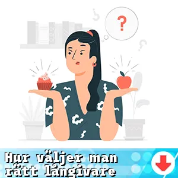

Vi vet att det kan vara svårt att hitta rätt långivare. Men genom att noggrant utvärdera dina behov, jämföra villkor och granska långivarens rykte kan du säkerställa en trygg och fördelaktig låneupplevelse.
Det är väl värt om du kan investera lite tid för att maximera dina lånemöjligheter.
Här finns våra aktuella lån?

Särskilda lån
Frågor och Svar []
- Långivaren med högst beviljandegrad (exempelränta 9.02 %) för april 2025 är COOP
- Det är viktigt att titta på räntor, avgifter, återbetalningsvillkor och kundservice. Dessutom bör du undersöka långivarens rykte och hur lätt det är att kontakta dem vid frågor eller problem.
- För att identifiera dina lånebehov, fundera på varför du behöver lånet och hur mycket du behöver låna. Tänk också på din återbetalningsförmåga och vilken tidsram du har för att betala tillbaka.
- Den effektiva räntan tar hänsyn till både räntan och andra avgifter kopplade till lånet, vilket ger en mer realistisk bild av lånets kostnad. Detta gör det enklare att jämföra olika långivare.
- Genom att betala av skulder, minska dina kreditkortsskulder och alltid betala räkningar i tid kommer din kreditvärdighet att förbättras. Det kan öka chansen att få bättre lånevillkor.
- Läs alltid det finstilta i lånevillkoren noggrant för att upptäcka eventuella dolda avgifter som kan påverka den totala kostnaden för lånet. Avgifter för ansökan, administration och förtidsbetalning är vanliga exempel.
- Ja, en låneförmedlare kan hjälpa dig att jämföra olika långivare snabbt och enkelt. De kan även ge råd baserat på din ekonomiska situation och hjälpa dig att hitta den bästa lösningen.
- En längre löptid resulterar ofta i lägre månadskostnader, men du kan slutligen betala mer i ränta. Det är viktigt att hitta en balans mellan behagliga månadskostnader och total kostnad för lånet.
- Ja, det finns långivare som specialiserar sig på lån till personer med svag kreditvärdighet. Dessa lån kan dock ofta ha högre räntor och mindre förmånliga villkor.
- Amortering är den del av lånet du betalar tillbaka varje månad och det är viktigt att förstå hur den påverkar din månadskostnad. En rak amortering ger högre kostnader i början men mindre över tid, medan ett annuitetslån med samma betalning kan kosta mer totalt.
- Online-låneplattformar erbjuder en snabb och enkel jämförelse av lån, men det är viktigt att dubbelkolla informationen som presenteras. Se till att villkoren är tydliga och att inga avgifter döljer sig bakom de erbjudna räntorna.